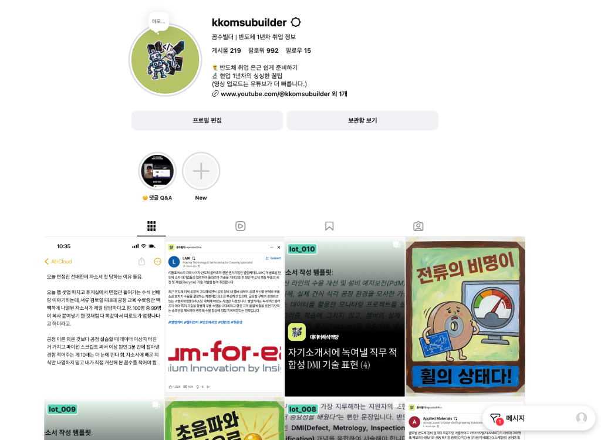

(반도체/IT 분야 취업준비생을 위한 커리어 꼼수 콘텐츠 브랜딩, 숏폼/카드뉴스 파이프라인 구축 및 Meta 데이터 기반 성과 분석)
1) 프로젝트 개요
- 기간: 2026. 06. 01. ~ 현재 (지속 운영)
- 유형: IT/반도체 테크 크리에이터 채널 브랜딩 및 콘텐츠 파이프라인 개발
- 채널명 & 인스타그램: '꼼수빌더' (@kkomsubuilder) ↗
- 한 줄 소개: 반도체·IT 분야 취업준비생과 학부 연구생이 잡 디스크립션(JD)과 팹 데이터를 활용해 서류 합격률과 실무 역량을 극대화할 수 있도록 돕는 커리어 해킹 콘텐츠 채널을 창설하고, 백엔드 데이터 분석 자동화 파이프라인을 구축한 프로젝트입니다.

Figure 1. 꼼수빌더 공식 인스타그램 프로필 (@kkomsubuilder) 및 팹 데이터 자소서/실무 팁 콘텐츠 계정 화면
2) 배경 및 핵심 목표
- 기획 배경: 대다수 반도체 취준생들이 단순 이론 교육이나 흔한 8대 공정 지식만 나열하다 서류 탈락을 겪는 문제를 해결하기 위해, 현업 양산 데이터(Kaggle SECOM, Spotfire ANOVA) 및 JD 우대사항 분석을 기반으로 실질적인 프로젝트 연결법을 전달하는 채널을 런칭함.
- 주요 핵심 목표:
- 콘텐츠 전달 메인: 반도체 전/후공정 직무 분석, 자기소개서 및 포트폴리오 차별화 전략, GitHub 프로젝트 관리법 등 취준생 맞춤형 숏폼/인스타 카드뉴스 제작.
- 데이터 분석 자동화: 수작업 성과 측정을 탈피하여 Meta 내보내기 지표(도달/저장/공유)를 한국 시간(KST)으로 정격 변환하고 Google Sheets 대시보드에 자동 시각화하는 파이프라인 구축.
3) 주요 성과 지표 (Impact & Metrics)
- 대형 바이럴 입증: "자소서 팹 데이터 문제 해결 꼼수" 콘텐츠 단일 게시물 기준 도달 30,345회, 저장 591회, 공유 208회, 신규 팔로워 33명 달성.
- 유저 행동 패턴 도출 (KST 적용):
- 오전 10:00 (학습/자소서 꼼수): 유저가 캡처 및 복습용으로 간직하는 저장(Save) 비율 4배 상승 (평균 10.1회/글).
- 밤 22:00 (채용 소식 & 업계 뉴스): 동기 및 지인에게 전달하는 공유(Share) 및 노출(도달) 우수 (평균 도달 663회, 공유 4.1회).
4) 적용 기술 및 개발 파이프라인
| 구분 | 내용 |
|---|---|
| 콘텐츠 기획 & 제작 | CapCut 9:16 Shorts Generator, Python Draft Builder, Figma Carousel Automation |
| 데이터 파이프라인 | Python, Pandas, Meta Graph API Exporter, KST Timezone Calibration Engine |
| 자동 동기화 | Google Sheets API (gspread), Content Performance Automation Dashboard |
| 도메인 주제 | JD Analytics, Semiconductor Fab Data (Spotfire/Kaggle SECOM), GitHub Portfolio Branding |
5) 세부 시스템 구축 과정
1. 취준생 맞춤형 콘텐츠 브랜딩 & 파이프라인
'Junseo senior' 대신 '꼼수빌더'라는 직관적인 친근 브랜드 아이덴티티를 정립함. long-form 발표 영상을 10개의 고도화된 숏폼(Shorts/Reels) 클립으로 분할하고 CapCut 템플릿과 연동하는 자동 렌더링 스크립트를 작성함.
2. KST 타임존 보정 및 성과 분석 엔진 (`sync_meta_performance_to_sheets.py`)
Meta 플랫폼에서 내보낸 CSV의 태평양 표준시(PDT) 오차를 한국 시간(KST)으로 정격 변환(+16시간)하여 실제 취준생들의 서핑 타임과 업로드 시간대별 반응성을 정확히 매핑함.
3. 구글 스프레드시트 캘린더 자동 수식 연결
새롭게 발행된 카드뉴스 및 숏폼 항목을 Google Sheets '크리에이터 콘텐츠 캘린더'와 연동하여 탭별 성과 매칭 및 시각적 가이드라인 대시보드를 자동 업데이트함.
6) 배운 점 & 크리에이터 엔지니어링 마인드
기술적 데이터를 단순히 혼자 아는 것에 그치지 않고, 타겟 유저(취준생)가 직관적으로 소비할 수 있는 스토리텔링 콘텐츠로 가공하는 기획 역량을 키웠습니다. 또한 감에 의존한 채널 운영이 아닌, 실제 이탈률과 도달/저장 반응 지표를 파이프라인으로 자동 분석하여 타겟 시간대별 최적 레시피를 도출하는 데이터 기반 크리에이터 성장 프로세스를 경험할 수 있었습니다.